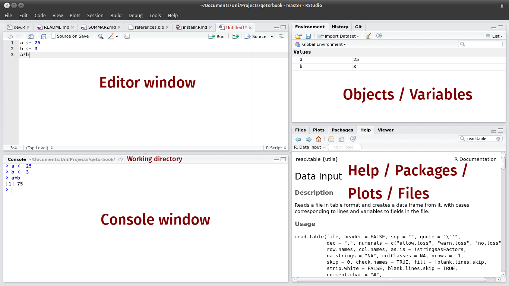
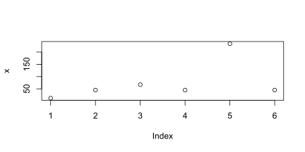

¿Qué?
¿Por qué?
Instalación de R es tan fácil como:
http://es.lmgtfy.com/?q=r+cran+descargar
De la misma forma RStudio:
http://es.lmgtfy.com/?q=rstudio+descargar
La instalación es estándar (click click click).
Simplemente abrimos RStudio que internamente usará R

x <- c(12, 45, 67,45, 234, 45) y ejecutar (CTRL + R)mean(x) y plot(x)## [1] 74.66667
install.package. Ejemplo/Ejercicio install.package("tidyverse")library. Ejemplo/Ejercicio library(readxl)Resumen. En un computador debemos instalar una vez el paquete, y cargar el paquete las veces que los requiramos.
Podemos seguir detalles en este tutorial de Riva, otra Firestarter:
https://github.com/rivaquiroga/RLadies-Santiago/blob/master/2018-04_taller_primeros_pasos_en_R.Rmd